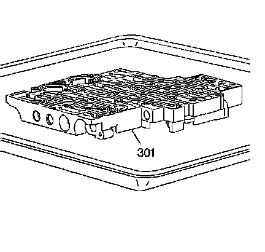

Control Valve Body Cleaning and Inspection
Control Valve Body Cleaning and Inspection

Notice: Do not reuse cleaning solvents. Previously used solvents may deposit sediment which may damage the component.
1. Clean the control valve body (301) in clean solvent.
2. Dry the control valve body (301) using compressed air.
3. Inspect the control valve body casting for the following conditions:
^ Porosity
^ Cracks
^ Interconnected passages
^ Damaged machined surfaces